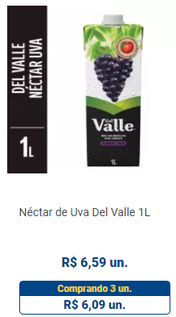

Os sucos são ótimos acompanhamentos na hora de aproveitar uma boa refeição. Seja nos dias mais quentes ou mais frios, a bebida é uma boa pedida para tornar qualquer refeição muito mais saborosa, seja o café da manhã, da tarde, almoço ou jantar.
Os sucos naturais, como é o integral, contêm 100% de fruta. Entre os preferidos, o de laranja e uva garantem satisfação de toda a família e combinam com diversos pratos. Vale observar que o suco integral pode variar de cor e sabor, conforme a safra da fruta.